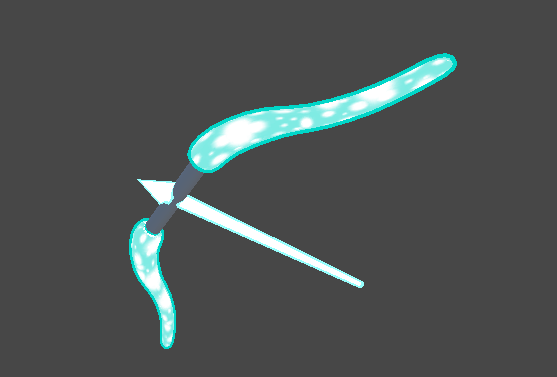

I wanted to make a much more dynamic scene, so I also forayed into animation for the first time. Animation isn't my strong suit, but I was willing to learn it to complete this project. The animation and rigging of the model quickly became the most time consuming part of the project.
The shaders, on the other hand, were more simple to work with.
The bow is "spawned" in through vertex displacement along the surface normals. What I wanted to achieve during this time was a glow with the bow. At the time, I did not know how to make a post processing effect, so instead I opted for an outline. This is something I hope to achieve soon.
The ground breaking was achieved from a C# script rotating and translating the individual ground pieces.
All in all, this project was an experiment to see what I could do with my current knowledge at the time. While I achieved the basics of what I wanted to see, there was a lack of polish due to my inexperience with animation and no knowlege of post processing effects.